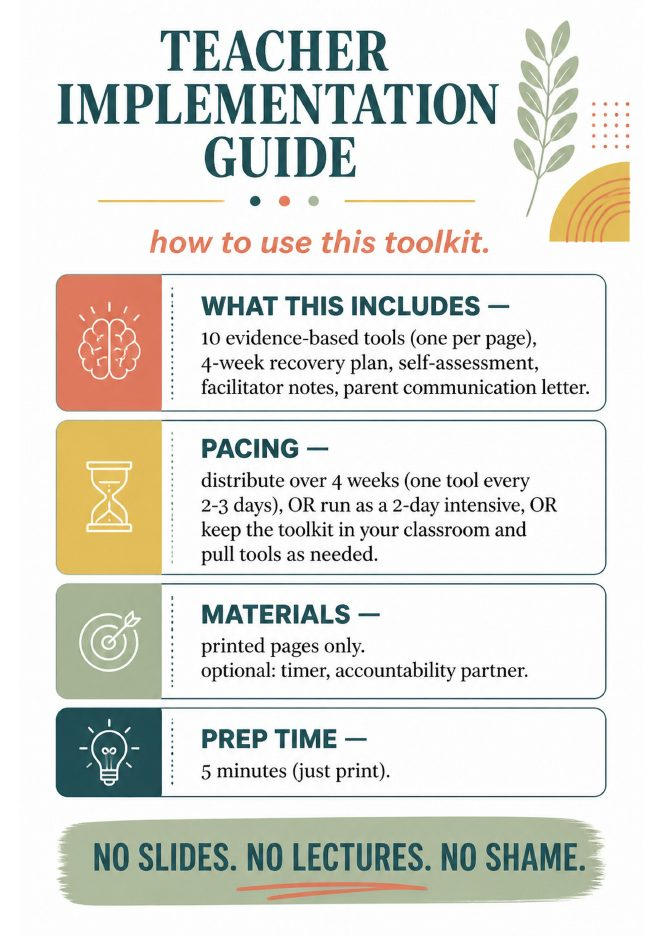
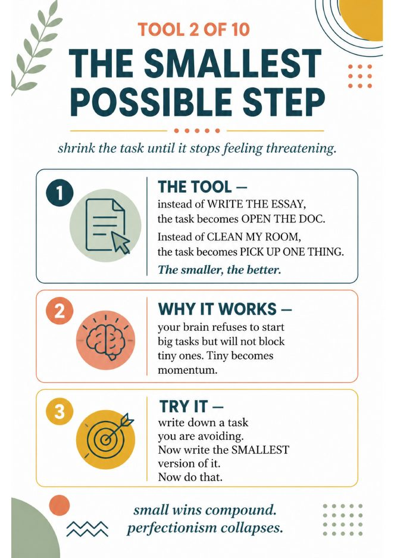
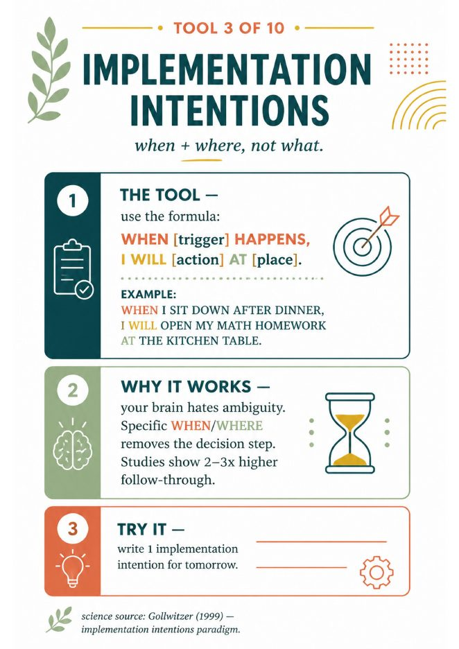

Quirepress
QuirepressStudy skills & executive function · grades 6–12
The Procrastination Toolkit
A 25-page, evidence-based kit for breaking the avoidance loop. Ten tools, one per page, a four-week recovery plan, a self-assessment, facilitator notes and a parent letter. No slides, no lectures, no shame.
- Also in the Executive Function Bundle 6–12, with organization, time management and motivation
- Pairs with Breaking the Avoidance Cycle, the 3–5 day mini-unit on the feeling behind the delay


Look inside
Seven of the twenty-five pages.





What is inside
Ten tools, one page each.
Each tool page has the same three parts: the tool, why it works, and a try-it box students fill in before the bell. The first three:
- What procrastination actually is (spoiler: not laziness) and the science behind it, with sources
- The procrastination cycle infographic, built for projection
- Tools 4 to 10, the 4-week recovery plan and the self-assessment
- Facilitator notes and a parent communication letter
How teachers run it
One tool every two or three days across four weeks. Or a two-day intensive. Or keep the kit in the classroom and pull tools as students need them.
Materials and prep
Printed pages only. Optional: a timer and an accountability partner. Prep time is five minutes, which is the time it takes to print.
Who it is for
Grades 6 to 12. Advisory, health, SEL blocks, study hall, counseling groups, and the one student who needs it in a 1:1.
Questions
Before you buy.
Is it editable?
No. It is a PDF of printed pages. There is no slides file and no text document. What you see in the preview is exactly what you download.
Do students need devices?
No. Project the two infographics if you like, then everything else is paper and pencil.
Is it a 4-week unit or a one-off?
Both work. The pages are independent, so a single tool stands alone for a 15-minute advisory block. Run all ten and you have a four-week arc.
What is the license?
One classroom. Additional licenses for colleagues are discounted at checkout on TPT.
What does “evidence-based” mean here?
Each science page names its sources on the page (for example Pychyl, Sirois and Tice on procrastination as emotion regulation; Gollwitzer on implementation intentions).

Same shelf